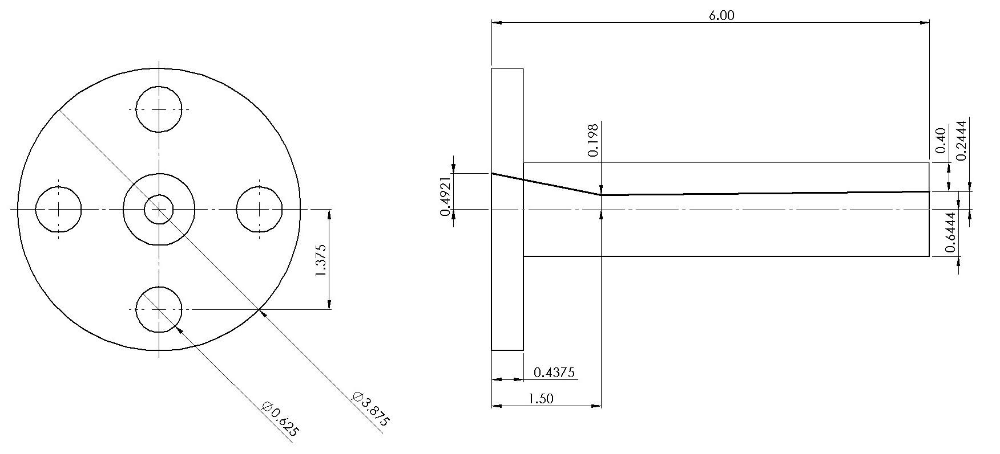
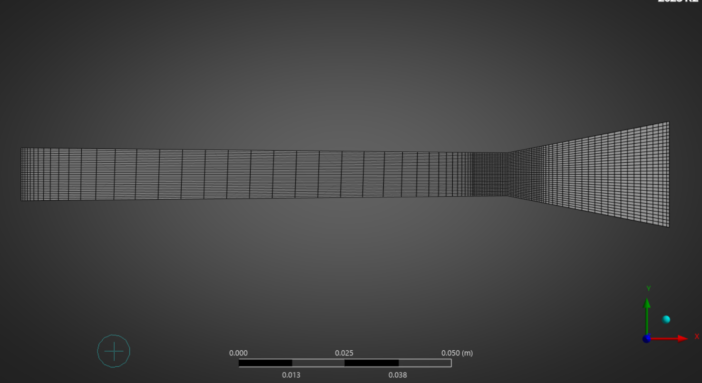
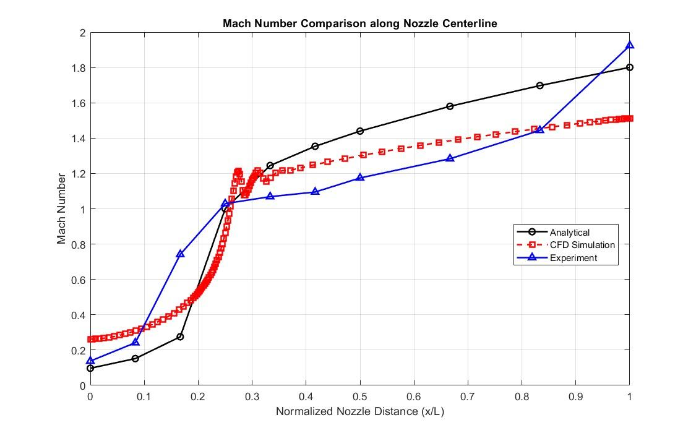
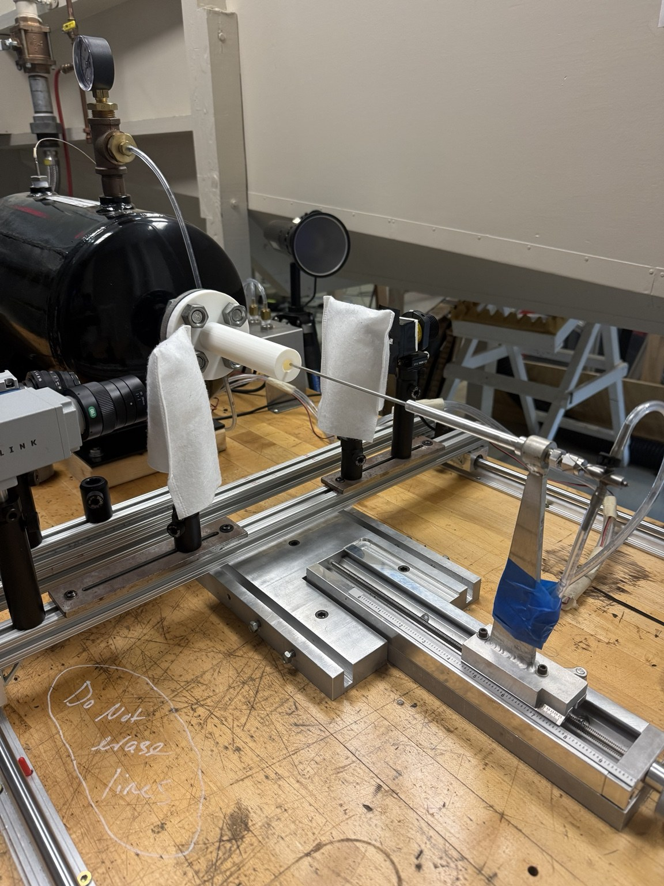
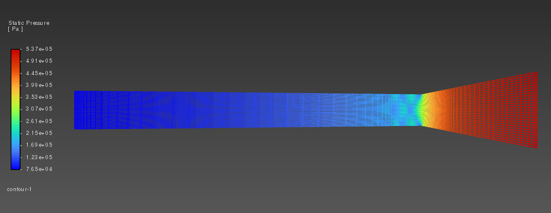
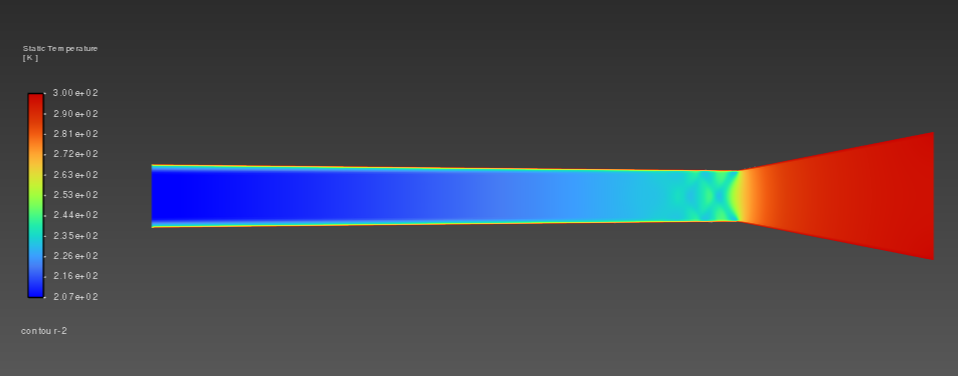
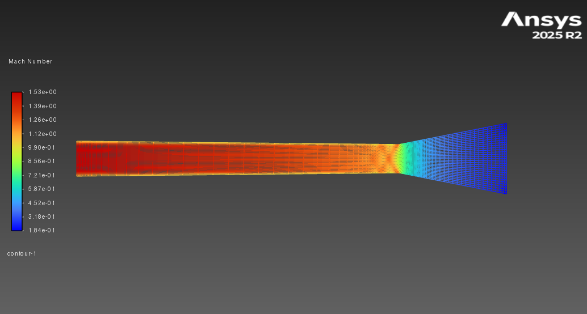
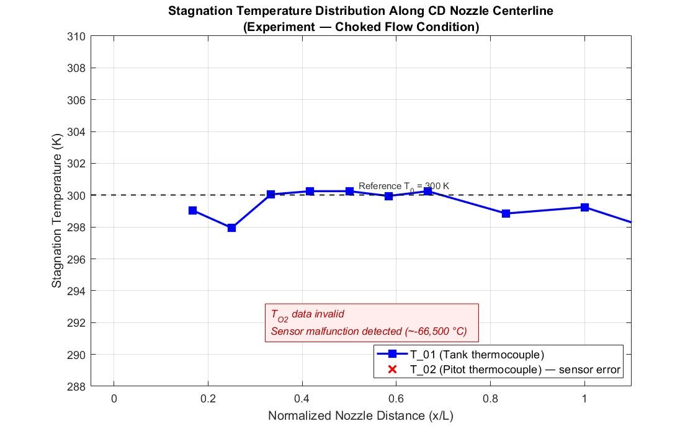

Project Overview
Turning compressible-flow theory into a physical test article.
The objective was to design and manufacture a functional nozzle that accelerated air from subsonic conditions to supersonic flow, then compare theoretical predictions against CFD and wind-tunnel measurements.
Engineering objective
The nozzle geometry was sized with the area-Mach relation and one-dimensional isentropic equations. The resulting design was modeled in SolidWorks, printed in PLA+, simulated in ANSYS, and tested using a traversing Pitot-tube system.
The comparison focused on Mach number, pressure, temperature, density, velocity, and mass-flow behavior along the nozzle centerline.
Engineering Methodology
Four connected stages from equations to experiment.
Each stage supplied a different level of fidelity. The analytical model established the expected trends, CFD captured spatial flow behavior, and physical testing revealed effects not represented in the idealized models.
One-dimensional flow model
Used the area-Mach relation and isentropic equations to calculate Mach number, pressure, temperature, density, velocity, and mass flow at ten locations through the nozzle.
SolidWorks geometry
Converted the required throat and exit area ratios into a revolved nozzle geometry while satisfying length, wall-thickness, flange, and instrumentation-clearance constraints.
ANSYS CFD model
Generated a quadrilateral-dominant mesh and evaluated Mach number, static pressure, and static temperature throughout the internal flow field at the expected supply condition.
Wind-tunnel measurements
Moved a Pitot probe through the nozzle at 0.5-inch and 1-inch increments, then reduced the pressure measurements using isentropic and Rayleigh-Pitot relationships.

Dimensioned nozzle geometry
The 6-inch model includes the inlet flange, converging section, throat, and gradually expanding diverging section.

Computational mesh
A structured, quadrilateral-dominant mesh resolved the converging region, throat, and expanding supersonic section.
Analytical Model
The expected transition from subsonic to supersonic flow.
The one-dimensional solution predicted constant mass flow, choking at the throat, and continued acceleration through the diverging section as static pressure, temperature, and density decreased.
Selected analytical results
- Inlet Mach number0.10
- Throat Mach number1.00
- Exit Mach number1.80
- Exit velocity487.0 m/s
- Exit static pressure83.9 kPa
- Mass-flow rate0.0913 kg/s
Area-Mach relation
A/A* = (1/M)[(2/(γ+1))(1 + ((γ-1)/2)M²)]^((γ+1)/(2(γ-1)))
The throat area defines the sonic reference area. Solving the relation on the subsonic branch before the throat and the supersonic branch after the throat produces the centerline Mach distribution.
Results and Validation
The three methods captured the same overall flow transition.
All three approaches showed the flow reaching Mach 1 near the throat and becoming supersonic in the diverging section, although the final Mach number differed because each method represented losses and probe blockage differently.
Analytical exit Mach
The ideal one-dimensional model produced the highest theoretical acceleration without viscous losses or instrumentation blockage.
CFD outlet Mach
The simulation predicted a lower outlet Mach number while showing the expected pressure and temperature reductions through the nozzle.
Experimental exit estimate
The plotted experimental result exceeded the ideal prediction near the exit, which the report linked to probe blockage and an exit shock.

Centerline Mach-number comparison
The analytical, CFD, and experimental curves all show rapid acceleration near the throat, located at approximately 25% of the normalized nozzle length.
Differences in the diverging section were attributed to boundary-layer effects, the physical presence of the Pitot probe, and the overexpanded exit condition.
The analytical exit pressure was 83.9 kPa, below the 101.3 kPa ambient
pressure. The report therefore classified the nozzle as overexpanded.
CFD and Experimental Media
Flow-field visualization and test evidence.
The laboratory photograph documents the physical nozzle test setup. The contours show the spatial changes in pressure, temperature, and Mach number, while the temperature plot documents both stable reservoir data and the failed Pitot thermocouple measurement.

Experimental test setup: the 3D-printed
convergent-divergent nozzle installed in the laboratory apparatus
used to collect the experimental pressure and temperature data.

Static-pressure contour: approximately 537 kPa at the
inlet and 76.5 kPa at the outlet.

Static-temperature contour: approximately 300 K at the
inlet and 207 K at the outlet.

Mach-number contour: the CFD solution accelerated from
approximately Mach 0.184 at the inlet to Mach 1.53 at the outlet.

Temperature validation: the reservoir thermocouple
remained near 300 K. The Pitot thermocouple was excluded after reporting
physically impossible values near -66,500 °C.
Engineering Takeaways
What the project demonstrated.
Analytical models establish the physics
The one-dimensional solution correctly predicted choking, constant mass flow, and the direction of pressure, temperature, and velocity changes through the nozzle.
Instrumentation changes the experiment
The Pitot probe occupied part of the flow area, creating blockage that was not present in the analytical model or the CFD geometry.
Sensor validation is part of data analysis
The failed thermocouple could not be treated as valid data. Excluding the impossible reading preserved the credibility of the remaining temperature comparison.
Explore the full project
The complete report includes the governing equations, analytical data, SolidWorks geometry, CFD contours, experimental reduction method, centerline comparisons, conclusions, and MATLAB code.